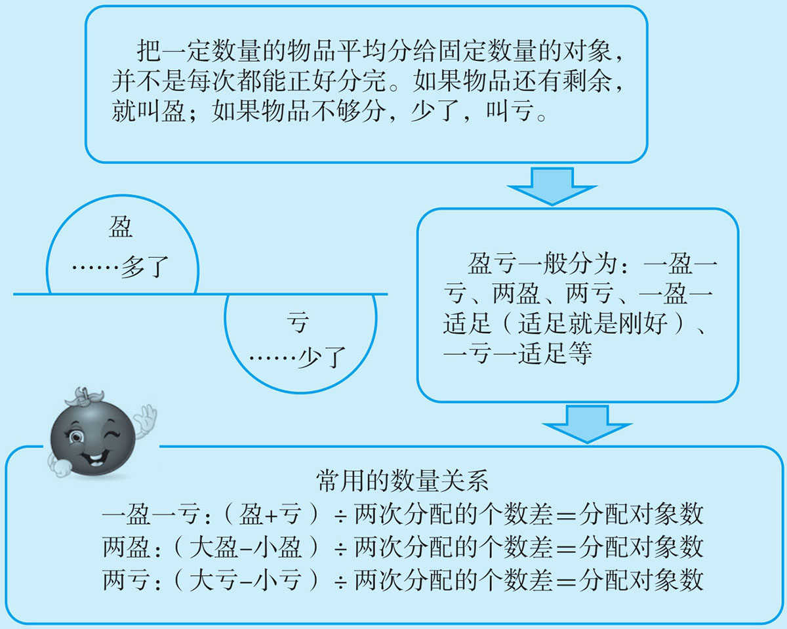
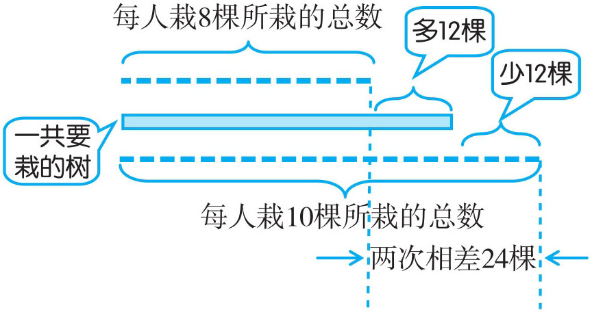
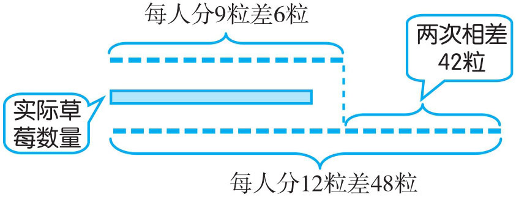
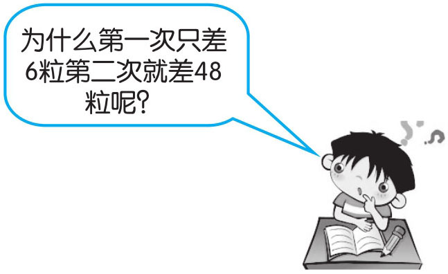
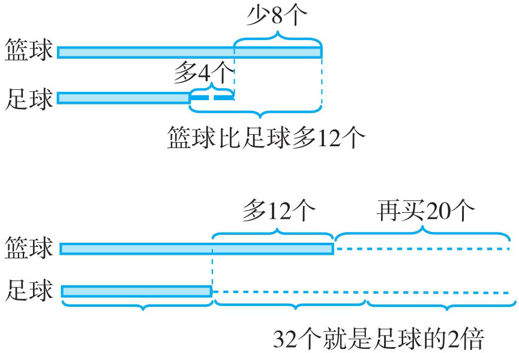
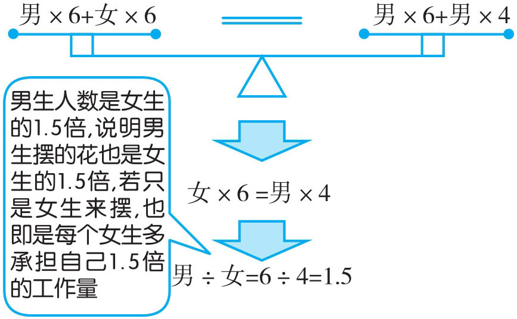
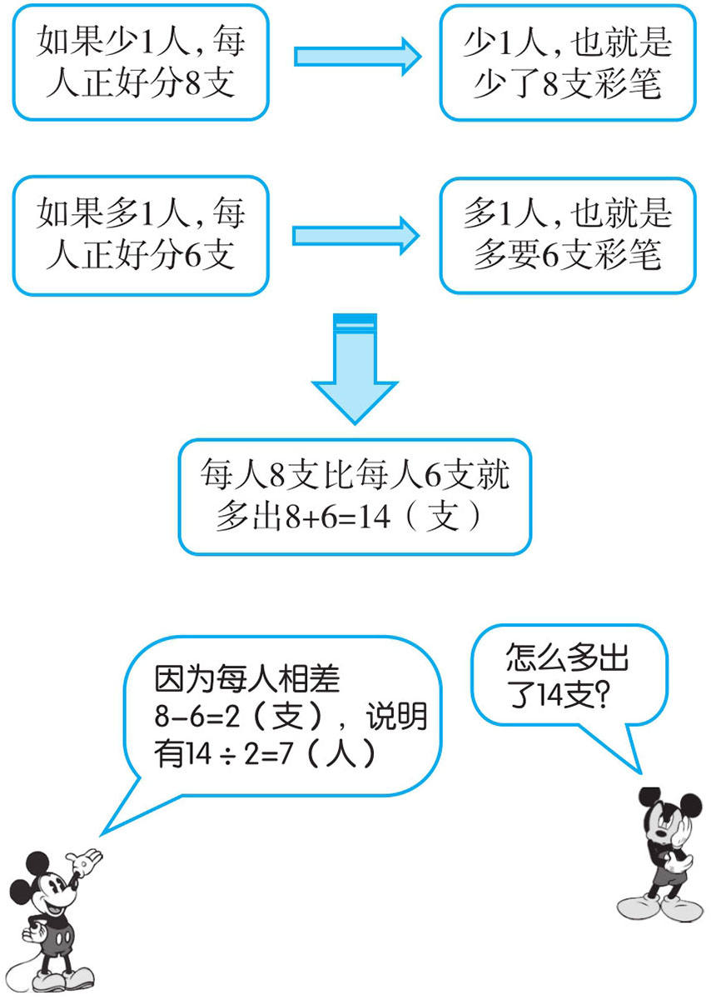

例1 东榆小学有一组同学去栽树，如果每人栽8棵则剩12棵；如果每人栽10棵则差12棵。问：这组同学有多少个？他们要栽多少棵树？
这是一道“一盈一亏”的题，从题中可知，这组同学的人数与要栽的棵数是不变的。比较两次植树方案，发现每人栽10棵树比栽8棵树要多需12+12=24（棵）树，怎么多出24棵树呢？就是因为每人多栽了10-8=2（棵）。每人多栽2棵，就多栽了24棵，说明一共有24÷2=12（人），有12×8+12=108（棵）树。

总人数：(12+12)÷(10-8)=24÷2=12（人）
总棵数：12×10-12=108（棵）
答：这个小组有12人，要栽108棵树。
例2 幼儿园老师给小朋友分草莓，如果每人分9粒则差6粒；如果其中8人每人分6粒，其余每人发12粒，就刚好分完。那么小朋友有多少个？草莓有多少粒？
从条件“其中8人每人分6粒，其余每人发12粒，就刚好分完”可推出：如果每人都发12粒草莓，则差(12-6)×8=48（粒）。实际上这是一道“两亏”问题，解决“两亏”问题一般用到的数量关系：（大亏-小亏）÷两次分配的个数差＝分配对象数。

(12-6)×8=48（粒）
小朋友人数：(48-6)÷(12-9)=42÷3=14（人）
草莓总数：14×9-6=120（粒）
答：小朋友有14人，草莓有120粒。

例3 林老师开学买进篮球与足球若干个，如果少买8个篮球，多买4个足球，则篮球与足球同样多；如果在原来的基础上再买20个篮球，则篮球是足球的3倍。林老师买来篮球和足球各多少个？
第一个假设：少买8个篮球，多买4个足球，篮球与足球同样多。由此可推出篮球比足球多12个。
第二个假设：再买20个篮球，则篮球是足球的3倍。篮球已经比足球多12个，再买20个，这时篮球比足球多20+12=32（个）。题中告知篮球这时是足球的3倍，那么篮球比足球就多2份，2份就是32个，1份（也就是足球）就是32÷2=16（个）。篮球就为16+4+8=28（个）。

足球的个数：
(8+4+20)÷(3-1)=32÷2=16（个）
篮球的个数：16×3-20=28（个）
答：足球16个，篮球28个。
例4 某班为在国庆节布置校园购进若干盆花，张琴老师安排五（一）班的学生来摆放，每人摆6盆，刚好摆完；如果只让男生来摆，平均每人多摆4盆。如果只让女生来摆，平均每人摆多少盆？

6÷4×6+6=9+6=15（盆）
答：如果只是女生摆，平均每人摆15盆。
例5 朱玲老师把一大盒彩笔分给一个组的小朋友，如果少1人，每人正好分8支；如果增加1人，每人正好分6支。这一大盒彩笔有多少支？

小朋友人数：(8+6)÷(8-6)=14÷2=7（人）
彩笔总数：8×(7-1)=48（支）
答：这一大盒彩笔共有48支。
1．石矿小学的学生去秋游，如果每车乘28人，则有13名同学上不了车；如果每车乘32人，则还有3个空位。问：有多少名学生？有多少辆车？
2．参加美术活动小组的同学，分配若干支彩色笔。如果每人分5支多12支，如果每人分8支还多3支。问：有多少名同学，有多少支彩色笔？
3．桥坝小学学生去义务为新村农户贴对联，每组5人，可正好分成若干组；如果每组增加到7人，可以减少4组。问：一共有多少人参加义务活动？
4．东榆小学的老师去跃进村做教育扶贫宣传，每人6户，刚好分完。如果只由男老师去，每位老师就要多3户。问：如果只要女老师去，每位老师有多少户？
5．姜艳老师带领同学去划船，如果减少一条船，每条船正好坐7名同学；如果增加一条船，每条船正好坐5名同学。问：姜老师带了多少名同学？
6．圣诞节一个小组的同学正在分礼物，每人分10件正好分完；如果每人分16件，则有3个同学分不到礼物。问：有多少件礼物？
7．刘阿姨给参加夏令营的同学发饼干，如果其中4人每人分8块，其余每人分3块，则少10块；如果其中2人每人分10块，其余每人分2块，则多24块。问：有多少个同学？有多少块饼干？
8．有一些苹果，每人分5个多10个；如果现在人数增加到原来人数的1.5倍，那么每人分4个就少2个。问：这些苹果共有多少个？
9．一个夏令营去桂林参加划船活动，如果6人坐一条船，就多2条船；如果4人坐一条船又少2条船。问：这个夏令营共有多少名学生？